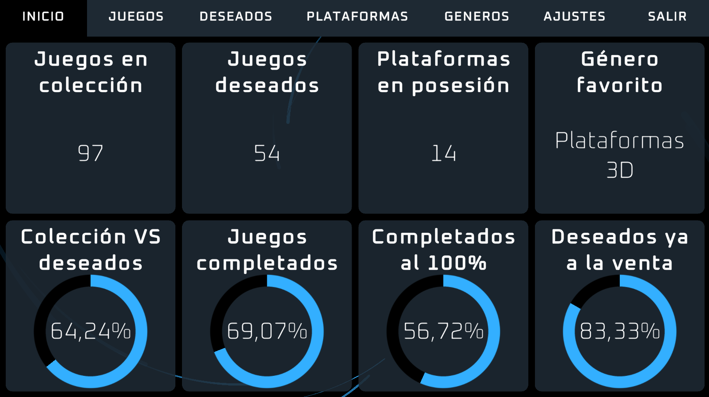
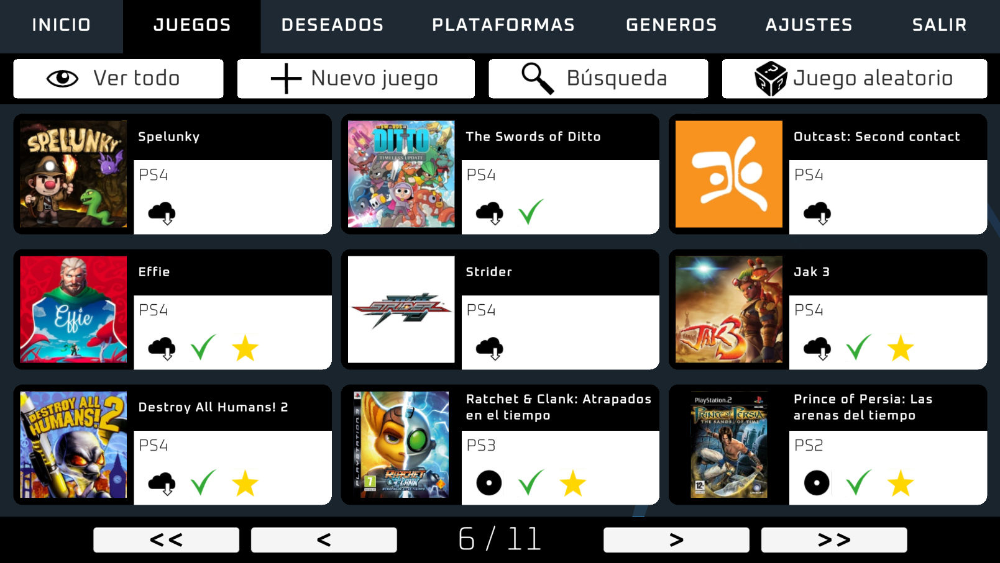
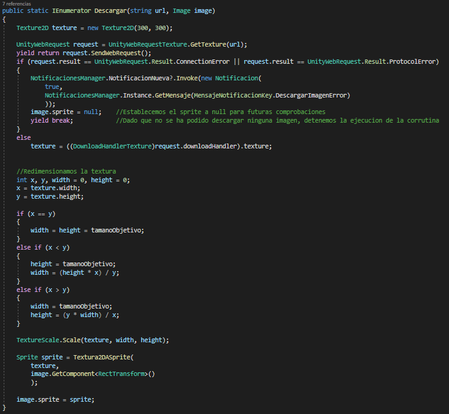

Proyecto
Aplicación de gestión en la que se pueden crear, modificar y eliminar juegos (en colección), deseados, plataformas (o consolas) y géneros. Al comenzar se muestran datos generales de la colección como el total de tuplas de cada entidad, cuáles se repiten más y comparaciones.
Descripción y contexto
Dado que lo que menos había trabajado durante mis anteriores proyectos era la interfaz de usuario, me propuse crear una aplicación que fuese integramente
UI.
En esta ocasión quería desarrollar algo distinto, algo para lo que Unity en un principio no está enfocado principalmente.
Una interfaz gráfica, sencilla pero estilizada, con conexión a una base de datos SQLite, mediante la cual se podrían gestionar
varias entidades y sus datos.
De nuevo, la aplicación cuenta con la posibilidad de mostrarse en español e inglés.
Los distintos componentes de la interfaz cuentan con animaciones creadas mediante código usando el paquete DOTween y efectos de sonido para
reaccionar a distintas interacciones.
El arte esta vez, ha sido creado en su totalidad por mí.

Cada entidad cuenta con su propio panel de visualización, donde se puede navegar por el contenido mediante un paginador.
Todas las entidades se pueden crear, modificar y eliminar, pero algunas cuentan con interacciones propias, por ejemplo:
· Los juegos se pueden mostrar en modo presentación, que muestra los datos ordenados en una sola vista.
· Los deseados cuentan con la posibilidad de pasar a colección, que como su nombre indica, hace que el juego pase a formar parte de los juegos que
ya tenemos en posesión. Por otra parte, si se ha añadido un enlace de compra, se mostrará un botón para acceder mediante el navegador
predeterminado a dicho enlace.
Por otro lado, cada panel tiene la opción de ver todo el contenido, crear una nueva entrada y realizar una búsqueda; además:
· En los juegos se puede mostrar un juego aleatorio , para cuando no sabemos a qué jugar.
· En los deseados, un deseado aleatorio que tiene en cuenta el nivel de deseo y muestra alguno de los que actualmente tengan un número
alto para darnos una idea de cual podrímos adquirir si estamos dudosos; aunque no siempre mostrará ni el mismo deseado ni los que mayor nivel de deseo
tengan, dando así variedad a la elección.

Se pueden realizar búsquedas simples introduciendo simplemente el texto a buscar y el campo por el cual queremos ordenar los resultados; o búsquedas avanzadas, teniendo la posibilidad de acotar la búsqueda a parámetros más específicos.

Para experimentar también un poco con el manejo de ficheros en Unity, decidí que las imágenes se guardarían directamente en disco.
Tras pensar la manera más óptima y sencilla para el usuario final de realizar el proceso de selección de imagen, decidí que se
copiaría el enlace de la dirección de la imagen para que, mediante un botón, la aplicación hiciese el resto, realizando
primero un proceso de redimensión para que un volumen alto de imágenes, no supusiese mayor ocupación de espacio.
La resolución máxima de cualquier imagen será de 350x350px.
Si la imagen no es cuadrada, se realiza una comprobación para respetar la relación de aspecto de esta.

Para que la navegación sea más fluida, se incluyen atajos de teclado.
Estando en cualquier panel:
· F1: Ver todo.
· F2: Crear.
· F3: Búsqueda.
· F4: Aleatorio (sólo para Juegos y Deseados).
Estando en cualquier modal:
· Tab: Siguiente campo.
· Shift+Tab: Campo anterior.
· Inicio: Parte superior del modal.
· Fin: Parte inferior del modal.
· Esc: Cerrar el modal.
· Intro: Crear o guardar el contenido.